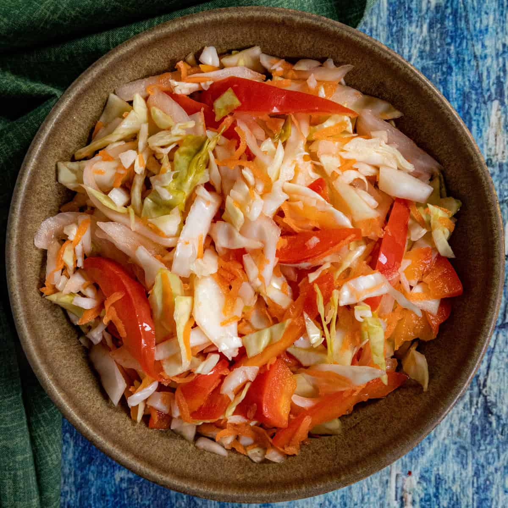

Patrimoine culinaire
Nos plats emblématiques
Cliquez sur une recette pour voir les ingrédients et les étapes.
Griot
Griyò
Le plat national haïtien par excellence — porc mariné dans l'épice haïtienne (épis), puis frit jusqu'à être croustillant à l'extérieur et tendre à l'intérieur.

Diri kole ak pwa
Riz collé aux haricots
Le plat de base de la cuisine haïtienne. Riz et haricots rouges cuits ensemble avec du thym, du piment et des épices créoles.

Soup joumou
Soupe giraumon
La soupe de l'indépendance haïtienne — servie chaque 1er janvier depuis 1804. Giraumon, bœuf, légumes et pâtes dans un bouillon riche.

Bannann peze
Tostones (plantains écrasés frits)
Plantains verts frits deux fois — une fois pour les amollir, une fois après les avoir aplatis. Croustillants dehors, moelleux dedans.

Pikliz
Pickles haïtiens épicés
Le condiment incontournable de la cuisine haïtienne — chou, carottes, piment scotch bonnet et vinaigre. Se sert avec tout.
Akasan
Boisson de farine de maïs
Boisson crémeuse à base de farine de maïs, lait de coco, cannelle et vanille. Servie chaude au petit-déjeuner.
Secret de cuisine
L'épis — le cœur de la cuisine haïtienne
L'épis (de l'espagnol épices) est le condiment de base de presque tous les plats haïtiens. C'est un mélange mixé de :
🧅 Oignons
1-2 gros
1-2 gros
🧄 Ail
1 tête entière
1 tête entière
🫑 Poivrons
Rouge + vert
Rouge + vert
🌿 Thym frais
Plusieurs tiges
Plusieurs tiges
🫒 Huile d'olive
3-4 c. à soupe
3-4 c. à soupe
🌶 Piment doux
1-2 scotch bonnet sans graines
1-2 scotch bonnet sans graines
Mixez tout ensemble jusqu'à obtenir une pâte lisse. Se conserve 2 semaines au frigo, ou congèle en portions dans des bacs à glaçons.
👨🍳
Partagez votre recette !
Vous avez une recette de famille à partager avec la communauté ? Contactez-nous — nous l'ajoutons avec votre nom.
Nous contacter